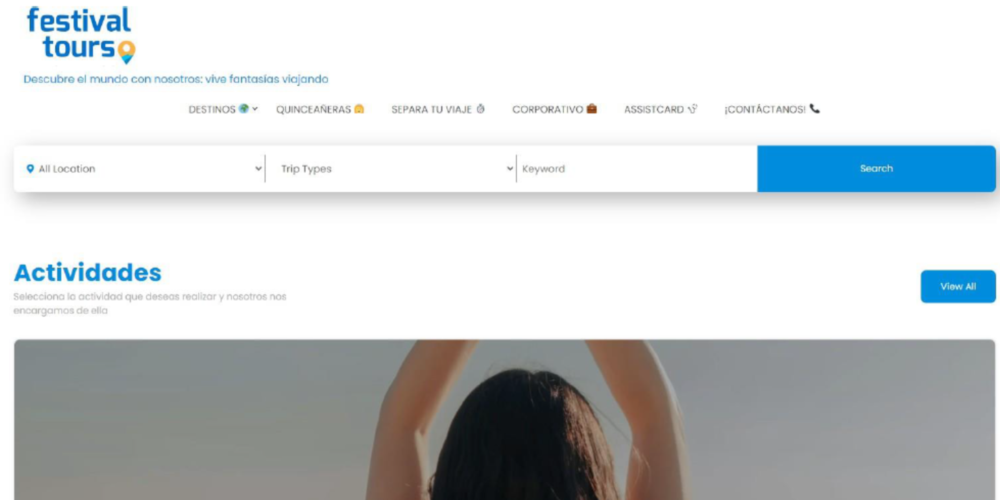
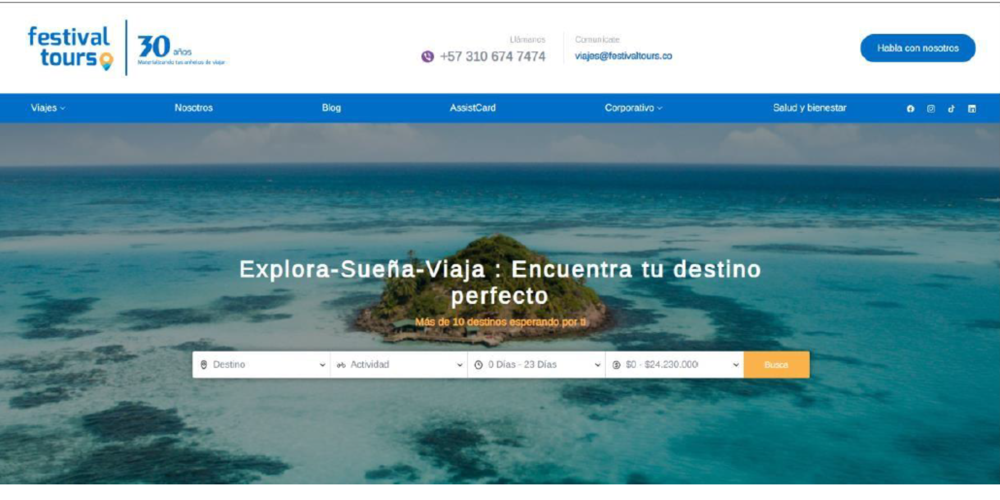
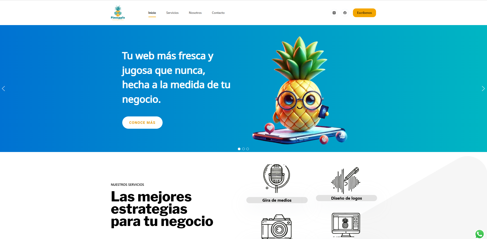

Hola! Mi nombre es Paola Vargas, Yo soy
Ingeniera de Software
Front end - Data visualization
Bienvenido a mi portfolio! Soy ingeniera de software con estudios adicionales en Data Analysis con honores, especializada en desarrollo frontend y data visualization. Creando interfaces interactivas usando JavaScript transformando data compleja en limpios elementos visuales.

Proyectos
He aquí algunos proyectos construidos con JavaScript, HTML y CSS, diseñados pensando tanto en la funcionalidad como en el estilo. Cada proyecto refleja un minucioso proceso de análisis y desarrollo.
He aquí algunos proyectos desarrollados con WordPress, que combinan diseño, funcionalidad y experiencia de usuario. Cada proyecto demuestra un enfoque estratégico de la gestión de contenidos, una personalización perfecta del tema y una integración eficiente de plugins.
Proyecto de prácticas, empresa Festival Tours SAS.
Mejoré el sitio web de la empresa utilizando WordPress, mejorando su usabilidad, diseño y rendimiento general. Las optimizaciones se centraron en crear una experiencia de usuario más intuitiva, modernizar el diseño visual y mejorar la velocidad y la eficiencia del sitio.


Creación de una página web para un proyecto de desarrollo web.
Diseño y desarrollo de un sitio web WordPress para Pineapple, construido desde cero con modificaciones personalizadas de la plantilla para mejorar la funcionalidad, la estética y la experiencia del usuario.

Especializada en análisis de datos, con especial atención a la visualización de datos, el análisis estadístico y la inteligencia empresarial. Hábil en el uso de herramientas como SQL, Python y Power BI para extraer perspectivas y respaldar la toma de decisiones basada en datos.
Proyecto final de análisis de datos: Insights y Business Intelligence
Strategic Analysis of Valencia C.F. in La Liga Española Este proyecto presenta un análisis estratégico exhaustivo del Valencia C.F. en la Liga española, con especial atención a la identificación del enfoque óptimo para asegurar la victoria contra el Barcelona F.C. El análisis se llevó a cabo utilizando Looker Studio, aprovechando la visualización avanzada de datos y técnicas analíticas para evaluar los indicadores clave de rendimiento, las tendencias tácticas y los puntos débiles del rival. El estudio integra conocimientos estadísticos, datos históricos de partidos y modelos predictivos para formular una estrategia ganadora. El enfoque propuesto incluye ajustes tácticos, posicionamiento de jugadores y toma de decisiones basada en datos para mejorar las posibilidades de éxito del Valencia C.F. frente a uno de los equipos más fuertes de la liga.
Como instructor de Python para niños, enseño programación a través de proyectos interactivos basados en juegos que mejoran la resolución de problemas y la lógica de programación. Mi enfoque práctico fomenta la creatividad y el pensamiento computacional, haciendo que Python sea divertido y accesible para los más jóvenes.
Algunos proyectos creados por estudiantes utilizando el concepto fundamental
Una colección de proyectos diseñados por estudiantes que demuestran su comprensión de los conceptos fundamentales de programación y la aplicación de bibliotecas especializadas. Estos proyectos muestran la creatividad, las habilidades de resolución de problemas y la experiencia práctica con los principios de codificación, lo que permite a los estudiantes explorar aplicaciones del mundo real al tiempo que mejora su competencia técnica.